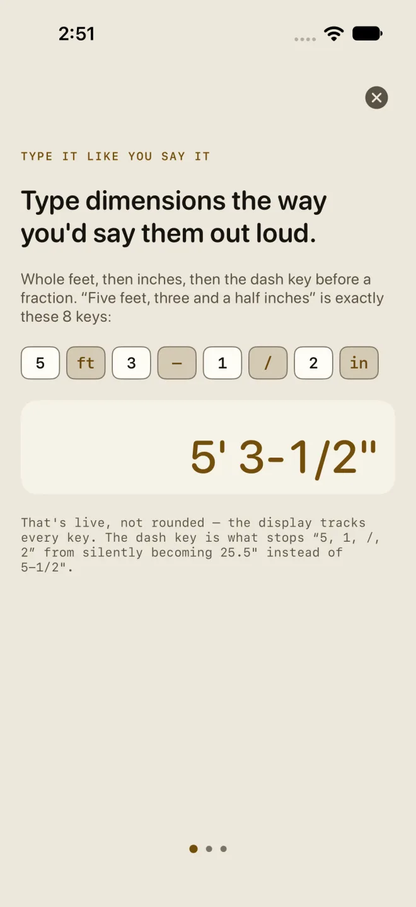

Measure twice
The first time you open the app, it asks you to read a short note before anything else. The note is the same one that sits under Settings ▸ LEGAL. It says what the app is: a tool. You still check the numbers.
The first launch

1![The Measure twice screen: the eyebrow MEASURE TWICE, the heading Before you start, five short lines (Housewright Calc is a tool. It is not a substitute for your judgment. Check quantities and cut lists against your plans before you order or cut. Check code references with your building department; your inspector has the last word. Structural sizes need an engineer where your code calls for one. Provided as is, without warranties.), the link Read the full text, and a gold I understand button at the bottom.](../shots/tool-measure-twice.webp) 2
3
4
2
3
4
- The intro has three pages. Swipe through them, or tap the round x at the top right to close it. Either way the next screen is the one below.
- Before you start — five short lines: the app is a tool and not a substitute for your judgment; check quantities and cut lists against your plans before you order or cut; check code references with your building department, because your inspector has the last word; structural sizes need an engineer where your code calls for one; and the app is provided as is.
- Read the full text opens the whole note in a sheet. Done closes it and you are back on the same screen.
- I understand — the only way in. Tap it and the app opens on the Dimensional Calculator. It does not ask again on this phone unless the note itself changes.
![The full Measure twice note in a sheet: the heading MEASURE TWICE and a Done button, then two paragraphs. The first says Housewright Calc is a tool in a professional's hands, to check every quantity, cut list and material list against your own plans, to check every code reference against the code your jurisdiction has adopted, and that your building department and your inspector have the last word. The second covers warranties, liability to the extent the law allows, and the Licensed Application End User License Agreement.](../shots/tool-measure-twice-text.webp)
Where it lives afterwards
- Settings ▸ LEGAL ▸ MEASURE TWICE carries the same full text any time. Settings opens from the drawer. See Free and Pro for where it sits in the list.
- Check before you cut · Measure twice is a quiet underlined line at the end of RESULTS on every calculator. Tap it to read the full text again before you order or cut.
- Where a calculator checks a figure against a code table, the line says within the limit, or over it, and names the IRC section and year. Within a limit is not an approval. Check the code your town has adopted, with its local amendments, before you build.
Common mistakes
- Reading a green line as an approval. It says the number is inside the table the screen names, nothing more. The table may be a different year from the one your town enforces.
- Ordering from RESULTS without checking the material list against your plans. Quantities include the waste factor you set.